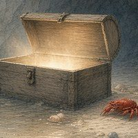
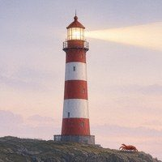
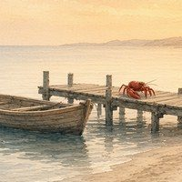
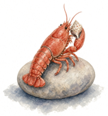

jouw
naam
Mijn DNA-paspoort
Naam (optioneel, alleen op de PDF)
Zorgzame onderzoeker. Wil weten hoe het zit en helpt graag.
Havo 4Profiel Natuur & GezondheidAmersfoort (school)Code K7Q-M2P
In mijn eigen woorden
Nog niets geschreven. Wil je het zelf invullen?Niveau
Havo 4examen in 2028, daarna hboMijn DNA in 4 lagen
In balans
Soms stil, soms actief.
Dit doe je graag
Onderzoeken en helpen
Je wilt weten hoe het zit.
Dit vind je belangrijk
Zelf kiezen
Je bepaalt graag zelf je aanpak.
Hier voel je je thuis
Zelfstandig, vrij
Ruimte om je eigen werk te doen.Mijn interesses
Dit vind ik leuk
Dieren
Liever niet
Nog niets gekozen.
Sterke punten
- Samenwerken. Je luistert en denkt mee.
Nog een sterk punt? Schrijf het op:
Sectoren die bij mij passen
Dieren & natuur
- Houdt van dieren en buiten zijn
- Zorgzaam én nieuwsgierig
- Stages in dierentuin, boerderij of natuur
Meer sectoren verschijnen hier als je meer van je profiel invult in Lobsy.
Bijbanen en stages die bij mij passen types werk, geen vacatures
Nog geen passende bijbaan of stage binnen jouw leeftijd en regels. Vul je profiel aan of kom later terug.
Droombaan en studierichting
Mijn droombaanNog geen droombaan gekozen. Kies er een in Lobsy, dan zie je hier je studieroute.

Je paspoort groeit mee. Vul je profiel aan in Lobsy, dan zie je hier meer richtingen en je studieroute.Om te bespreken met je mentor
Wat wil je nog uitzoeken? Schrijf het hier op en neem het mee naar je gesprek.